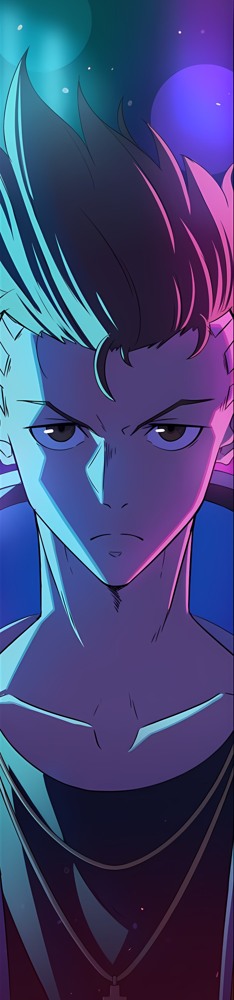
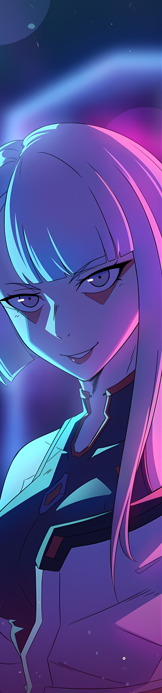
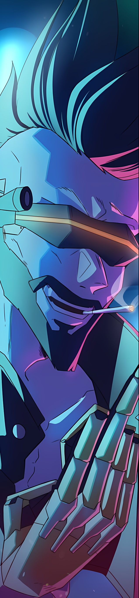
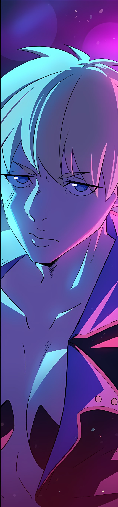
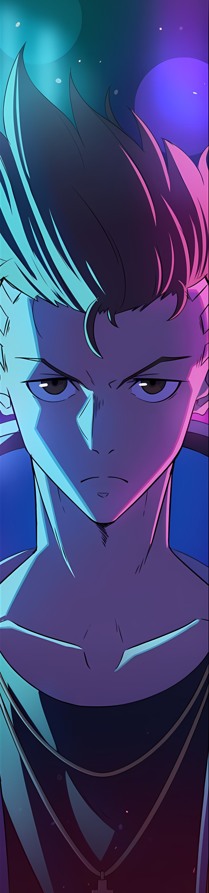
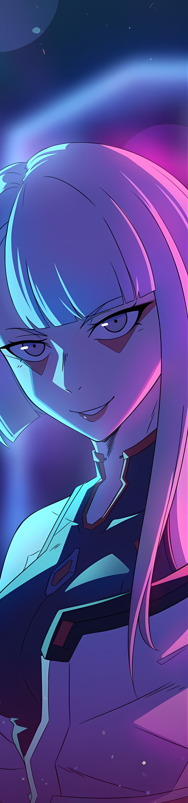
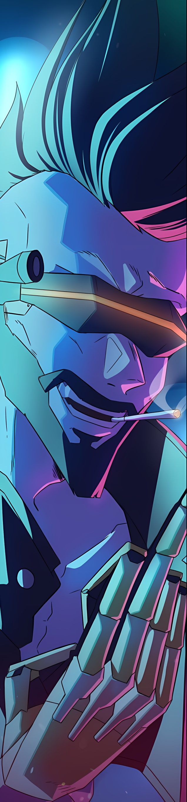
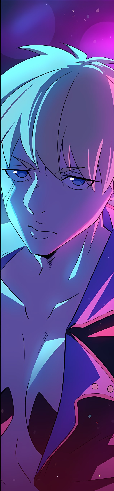

Sinopsis
En el año 2076, David Martínez es un niño de la calle que vive en Night City, una megaciudad distópica de Estados Unidos. David sueña con convertirse en un mercenario conocido como edgerunner, pero su vida cambia para siempre cuando su madre muere en un accidente. David es adoptado por un grupo de mercenarios, que le enseñan a luchar y a sobrevivir en el mundo de los edgerunners. David se convierte en un hábil mercenario, pero también descubre que el mundo de los edgerunners es un mundo peligroso y corrupto. David se ve envuelto en una serie de misiones peligrosas, que lo llevan a enfrentarse a los peligros del mundo de los edgerunners, así como a su propio pasado. David debe aprender a superar sus miedos y a aceptar su destino como edgerunner. Al final de la serie, David ha madurado y se ha convertido en un edgerunner experimentado. David está listo para enfrentarse a los desafíos del mundo de los edgerunners, y está decidido a hacer del mundo un lugar mejor.
Personatges
 







Estos són los personajes principales de la serie
Cinemes

La serie Cyberpunk: Edgerunners es una serie original de Netflix. Netflix tiene un acuerdo exclusivo con los creadores de la serie para distribuirla. Esto significa que la serie no está disponible en ninguna otra plataforma de streaming o en formato físico. Los cines no pueden proyectar películas que no tengan derechos de distribución. Por lo tanto, la serie Cyberpunk: Edgerunners no se puede ver en el cine porque Netflix no tiene la intención de distribuirla en formato cinematográfico. Esta es la razón principal por la que la serie Cyberpunk: Edgerunners no se puede ver en el cine.
Autor

Cyberpunk: Edgerunners es un anime de ciencia ficción creado por Rafał Jaki, dirigido por Hiroyuki Imaishi, escrito por Yoshiki Usa y Masahiko Ōtsuka.
Banda sonora

La banda sonora de la serie Cyberpunk: Edgerunners es una mezcla diversa de estilos musicales, que refleja la variedad de culturas y subculturas que existen en el mundo cyberpunk. La banda sonora incluye canciones de géneros como el rock, el pop, el hip hop, el metal y la electrónica.
Opinió

En mi opinion es una serie muy interesante con una gran cantidad de cambios de ritmo muy grandes y muy bien metidos.
Més informació
Aquí tienes algunos enlaces sobre Cyberpunk: Edgerunners.
| Enlace | Descripción |
|---|---|
| Artículo de SomosXbox sobre la banda sonora | Artículo sobre la banda sonora de la serie Cyberpunk: Edgerunners |
| Wiki de Cyberpunk | Wiki sobre el universo de Cyberpunk |
| Sitio web oficial de Cyberpunk | Sitio web oficial de la serie Cyberpunk: Edgerunners |